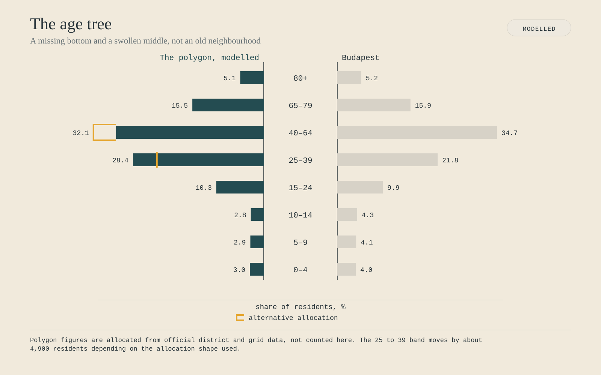
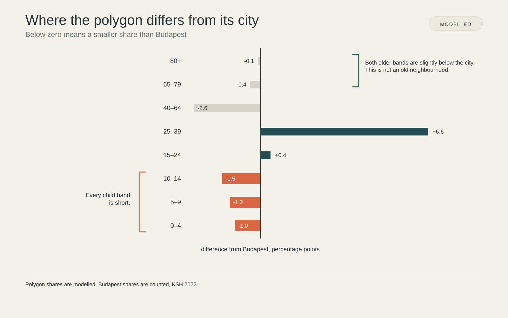
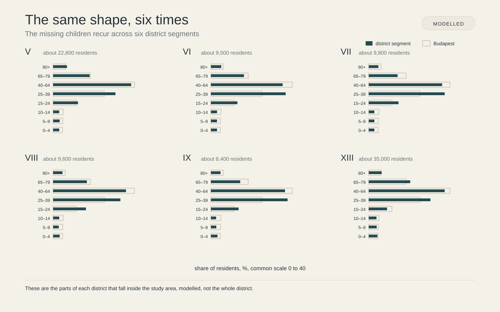
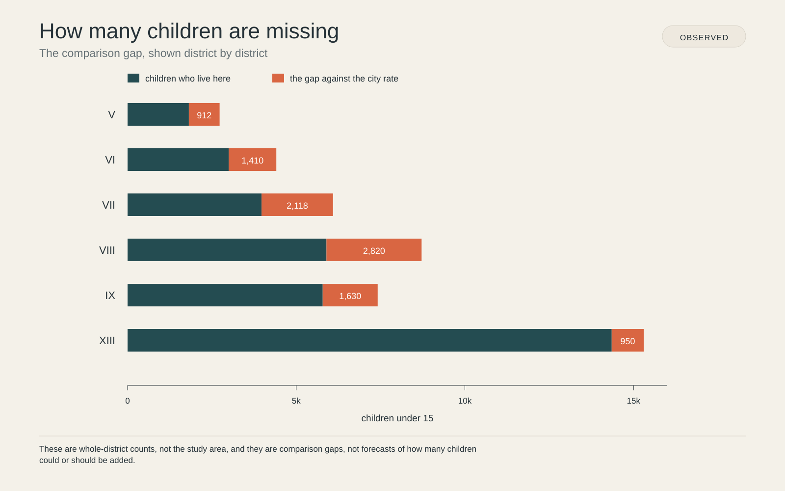
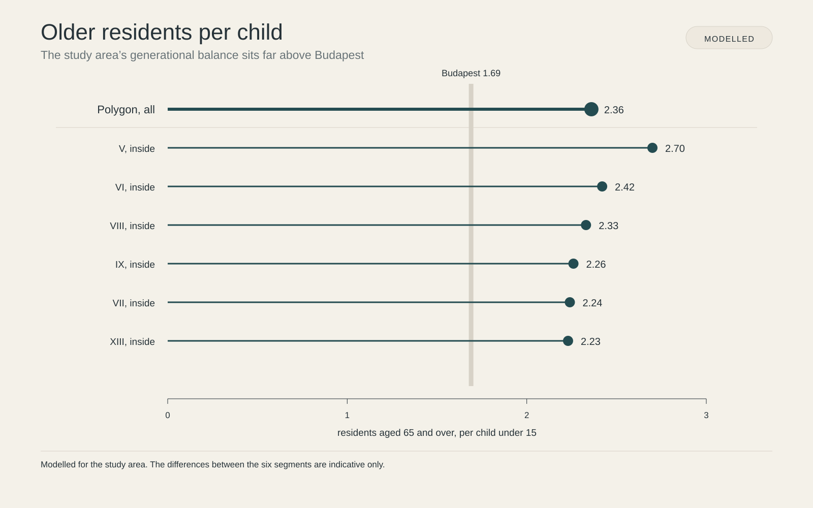
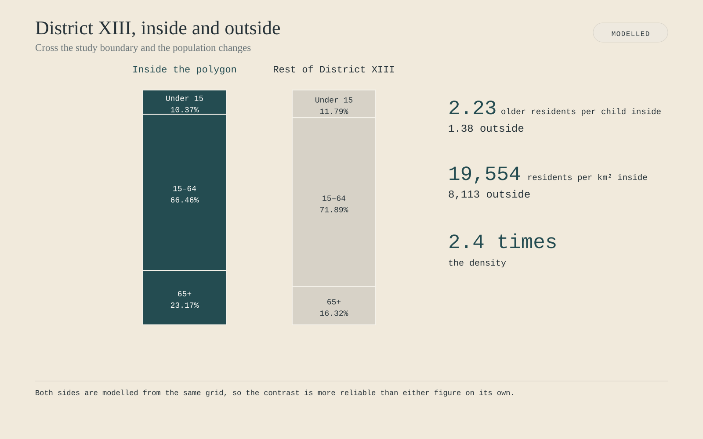
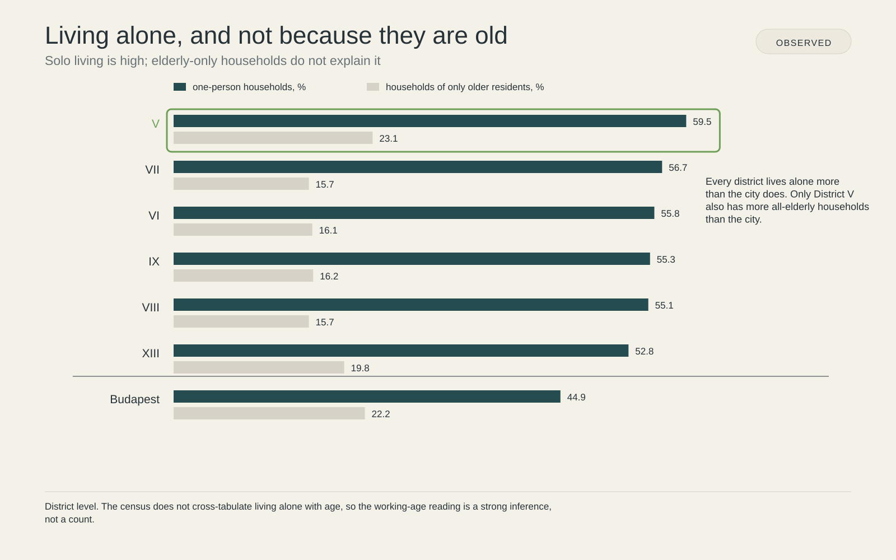
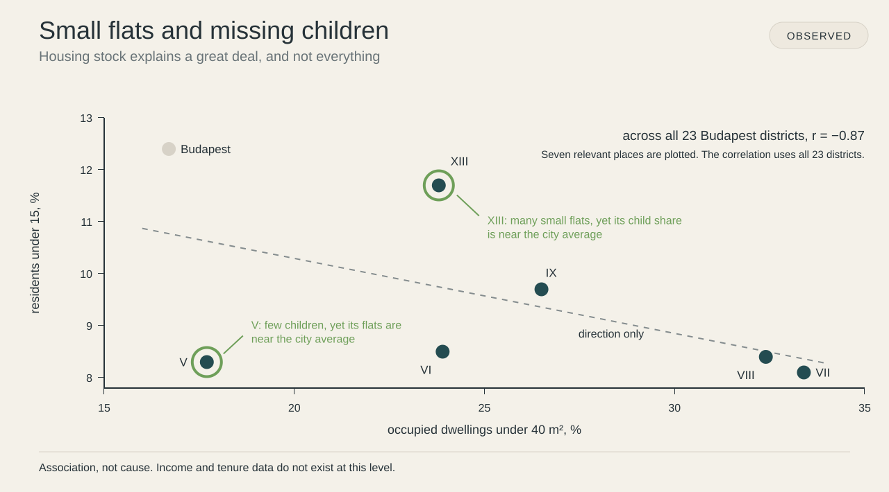
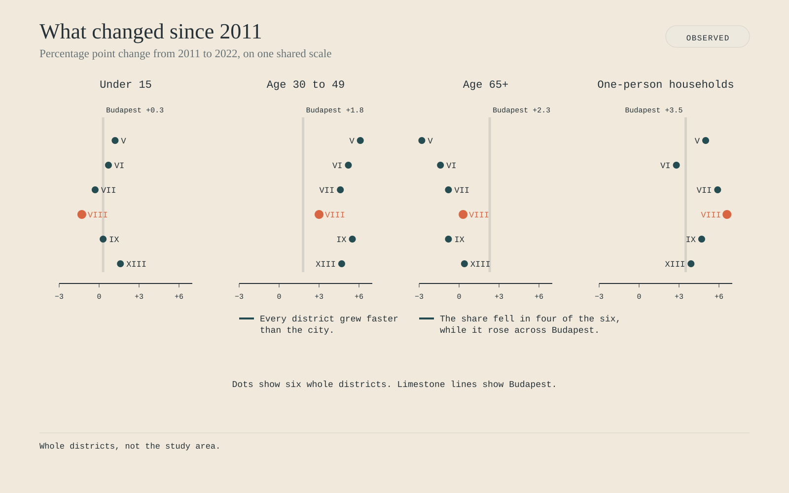

The story

Polygon shares are modelled, allocated from official district and grid data. Budapest shares are observed, KSH 2022. Per cent of residents.
| Age band | Polygon | Alt. allocation | Budapest |
|---|---|---|---|
| 80+ | 5.1 | 5.1 | 5.2 |
| 65–79 | 15.5 | 15.5 | 15.9 |
| 40–64 | 32.1 | 37.0 | 34.7 |
| 25–39 | 28.4 | 23.2 | 21.8 |
| 15–24 | 10.3 | 10.6 | 9.9 |
| 10–14 | 2.8 | 3.0 | 4.3 |
| 5–9 | 2.9 | 2.9 | 4.1 |
| 0–4 | 3.0 | 2.8 | 4.0 |

Modelled polygon shares against observed Budapest shares, KSH 2022. Percentage-point deviation from the city.
| Age band | Deviation, points |
|---|---|
| 80+ | −0.1 |
| 65–79 | −0.4 |
| 40–64 | −2.6 |
| 25–39 | +6.6 |
| 15–24 | +0.4 |
| 10–14 | −1.5 |
| 5–9 | −1.2 |
| 0–4 | −1.0 |

District segments inside the polygon are modelled. The Budapest outline is observed, KSH 2022. Per cent of residents.
| Age band | V | VI | VII | VIII | IX | XIII | Budapest |
|---|---|---|---|---|---|---|---|
| 80+ | 5.9 | 4.4 | 4.1 | 4.0 | 4.1 | 5.5 | 5.2 |
| 65–79 | 15.6 | 14.1 | 12.3 | 14.4 | 12.5 | 17.7 | 15.9 |
| 40–64 | 33.3 | 30.6 | 31.3 | 31.1 | 31.6 | 32.4 | 34.7 |
| 25–39 | 26.6 | 31.9 | 32.4 | 28.7 | 32.7 | 26.3 | 21.8 |
| 15–24 | 10.6 | 11.3 | 12.7 | 14.0 | 11.8 | 7.8 | 9.9 |
| 10–14 | 2.6 | 2.6 | 2.4 | 2.6 | 2.2 | 3.3 | 4.3 |
| 5–9 | 2.8 | 2.6 | 2.4 | 2.4 | 2.3 | 3.4 | 4.1 |
| 0–4 | 2.6 | 2.6 | 2.4 | 2.8 | 2.8 | 3.7 | 4.0 |

Observed, KSH 2022, whole districts. The shortfall is each district against the Budapest rate of children. Never summed.
| District | Children under 15 | Shortfall |
|---|---|---|
| V | 1,817 | 912 |
| VI | 3,000 | 1,410 |
| VII | 3,973 | 2,118 |
| VIII | 5,897 | 2,820 |
| IX | 5,785 | 1,630 |
| XIII | 14,353 | 950 |

Polygon figures are modelled. The Budapest reference of 1.69 is observed, KSH 2022. Residents 65+ per child under 15.
| Area | Older residents per child |
|---|---|
| Polygon, all | 2.36 |
| V, inside | 2.70 |
| VI, inside | 2.42 |
| VIII, inside | 2.33 |
| IX, inside | 2.26 |
| VII, inside | 2.24 |
| XIII, inside | 2.23 |
| Budapest | 1.69 |

Modelled, same grid data on both sides of the line. Age shares are per cent of residents.
| Measure | Inside the polygon | Rest of District XIII |
|---|---|---|
| Under 15 | 10.4% | 11.8% |
| 15–64 | 66.5% | 71.9% |
| 65 and over | 23.2% | 16.3% |
| Older residents per child | 2.23 | 1.38 |
| Residents per km² | 19,554 | 8,113 |

Observed, KSH 2022, whole districts. Per cent of households.
| District | One-person households | Everyone 65+ |
|---|---|---|
| V | 59.5 | 23.1 |
| VII | 56.7 | 15.7 |
| VI | 55.8 | 16.1 |
| IX | 55.3 | 16.2 |
| VIII | 55.1 | 15.7 |
| XIII | 52.8 | 19.8 |
| Budapest | 44.9 | 22.2 |

Observed, KSH 2022. The correlation of minus 0.87 is computed across all 23 Budapest districts, not only the seven plotted. Per cent.
| District | Homes under 40 m² | Residents under 15 |
|---|---|---|
| Budapest | 16.7 | 12.4 |
| V | 17.7 | 8.3 |
| VI | 23.9 | 8.5 |
| XIII | 23.8 | 11.7 |
| IX | 26.5 | 9.7 |
| VIII | 32.4 | 8.4 |
| VII | 33.4 | 8.1 |

Observed, KSH censuses 2011 and 2022, whole districts. Percentage-point change in share.
| District | Under 15 | Age 30 to 49 | Age 65+ | One-person households |
|---|---|---|---|---|
| V | +1.2 | +6.1 | −2.8 | +5.0 |
| VI | +0.7 | +5.2 | −1.4 | +2.8 |
| VII | −0.3 | +4.6 | −0.8 | +5.9 |
| VIII | −1.3 | +3.0 | +0.3 | +6.6 |
| IX | +0.3 | +5.5 | −0.8 | +4.7 |
| XIII | +1.6 | +4.7 | +0.4 | +3.9 |
| Budapest | +0.3 | +1.8 | +2.3 | +3.5 |
I could stop here. It would make a tidy page. Everything is close, the children are missing, somebody should look into that.
But this finding is not aimed at the city. It is aimed at me.
My whole proposition is that a vehicle you can summon is a vehicle you do not have to store. That works because one shared vehicle does the work of several private ones.
Our own model of that fleet assumes 1.70 people in a pooled vehicle. Not one. 1.70.
That number is doing a great deal of work, and this is the page where it gets tested.
Some of that pooling happens between strangers, and it does work, in every city that has tried it. But the easiest pooling is the kind a household produces without anyone arranging anything. The school run. The weekly shop. The visit to the grandparent. Four people, one vehicle, one journey, no app.
More than half the homes in these districts hold one person.
So a fleet here would have to pool strangers to reach a number I have already assumed. I do not know that it can.
That is not a footnote. It is a risk to my own idea, sitting in the middle of the page where I found it, and I would rather you heard it from me than found it yourself.
Everything a life needs is a few minutes away, and the people who would need it most are thin on the ground.
Not because they left. Because they were never here in the numbers the city has, in a place where up to a third of the homes are under forty square metres.
Somewhere between eleven thousand and twenty-five thousand parking spaces sit on the ground between these buildings. That is not a measurement. It is the distance between the models, and nobody has ever counted them.
So the ground under this neighbourhood is doing two things at once. It is holding a population that arrives one person at a time, and it is storing cars.
That is the question this whole thing turns on.
Not whether the neighbourhood works. It works.
Who it works for.